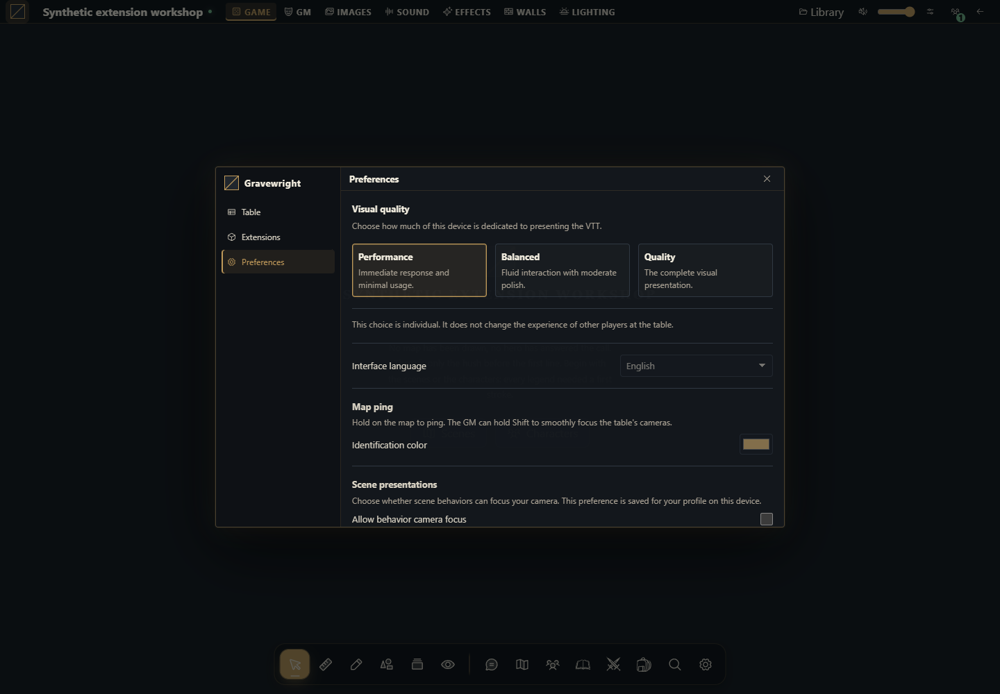

Como criar e ativar um pacote de idioma da instalação
Empacote seis textos originais, ative globalmente, escolha o idioma da conta e confira a alternativa em inglês.


O que este pacote altera
Crie um pacote declarativo de idioma para a instalação do Gravewright 0.3.0. A demonstração original traduz exatamente seis chaves de interface em português e espanhol. É propositalmente parcial: a maior parte do host permanece em inglês. Não traduz nomes autorais, chat, diários, PDFs nem avisos legais exatos. Não é uma release completa do Translator oficial.
Use instalação descartável. Ativar esse idioma o seleciona globalmente e desativa o pacote global anteriormente habilitado; não substitua a tradução ativa do operador para testar seis textos. Cada conta continua escolhendo seu próprio idioma de interface.
1. Comece pelos fontes completos existentes
language/
manifest.json
main.mjs
locales/pt-BR.json
locales/es.json
LICENSE.txt
README.mdCrie uma pasta language e salve os arquivos abaixo em UTF-8. Preserve a licença GPL e o README existentes no ZIP-fonte. Não há dependências npm nem arquivos Python neste pacote de navegador.
manifest.json
{
"id": "example.language-demo",
"name": "Example language demo",
"version": "1.0.0",
"sdk": {
"requires": ">=1.0.0 <2.0.0",
"tested": "1.0.0"
},
"description": "Partial original interface catalogs for Portuguese and Spanish.",
"author": "Gravewright documentation examples",
"license": "GPL-3.0-only",
"entry": "main.mjs",
"locales": {
"pt-BR": {
"name": "Português (Brasil)",
"path": "locales/pt-BR.json"
},
"es": {
"name": "Español",
"path": "locales/es.json"
}
}
}main.mjs
export default { start() {}, register() {}, stop() {} };locales/pt-BR.json
{
"Actors": "Personagens",
"Items": "Itens",
"Settings": "Configurações",
"Close": "Fechar",
"Save": "Salvar",
"Search": "Buscar"
}locales/es.json
{
"Actors": "Personajes",
"Items": "Objetos",
"Settings": "Ajustes",
"Close": "Cerrar",
"Save": "Guardar",
"Search": "Buscar"
}locales é metadado, não campo kind. A entrada start/register/stop sem ações atende ao contrato de navegador da release e não monta superfície da mesa. O manifesto não pode combinar system e locales, substituir en nem colocar um app Django neste pacote de idioma.
2. Valide o JSON e monte o ZIP
Na pasta language, use o Python já gerenciado pelo host. No PowerShell, ajuste python.exe para o caminho do host descartável. Em POSIX use .venv/bin/python. Não é necessário instalar dependências.
& 'E:/Your disposable host/.venv/Scripts/python.exe' -m json.tool manifest.json
& 'E:/Your disposable host/.venv/Scripts/python.exe' -m json.tool locales/pt-BR.json
& 'E:/Your disposable host/.venv/Scripts/python.exe' -m json.tool locales/es.json
& 'E:/Your disposable host/.venv/Scripts/python.exe' -m zipfile -c ../language-demo-1.0.0.zip manifest.json main.mjs locales LICENSE.txt README.md
& 'E:/Your disposable host/.venv/Scripts/python.exe' -m zipfile -l ../language-demo-1.0.0.zipA listagem deve mostrar manifest.json diretamente na raiz. json.tool verifica sintaxe; a instalação nativa também valida catálogos: objetos não vazios, até 15.000 entradas, strings não vazias de até 12.000 caracteres e os mesmos nomes/quantidades de {placeholder}. Uma tradução ausente usa a chave original em inglês.
3. Instale e ative os idiomas globais
Entre como dono da instalação. Abra Inside → Módulos → Instalar módulo → Instalar de ZIP, escolha o ZIP revisado e clique em Instalar. O envio local é decisão explícita de confiança e não exige catálogo remoto assinado.
Na biblioteca de Módulos instalados, encontre Example language demo. Use o ícone de energia com nome acessível/tooltip Activate languages, ou Ativar idiomas em português. A página recarrega após ativar.
Não procure esse pacote nas Extensões da campanha. Idiomas são globais à instalação e ficam fora dessa lista. Instalar, ativar globalmente e escolher idioma pessoal são três etapas diferentes.
4. Escolha o idioma da sua conta
Na mesa da 0.3.0, clique no botão Gravewright, abra Preferences / Preferências e encontre Interface language / Idioma da interface. Escolha Português (Brasil) ou Español e aguarde recarregar. O controle salva UserPreference.locale da conta autenticada; não é configuração da campanha. O formulário geral de conta/segurança não contém esse seletor nesta release. Repita com outra conta e escolha inglês nela.
Confira locais que usam exatamente essas chaves: Save vira Salvar ou Guardar, Close vira Fechar ou Cerrar e Search vira Buscar. A maior parte permanece em inglês porque são só seis chaves. Catálogos i18n de outro pacote e nomes autorais são conteúdos separados; esse pacote não promete traduzir todas as extensões.
5. Confira alternativa, atualização e desativação
Como dono, use Deactivate languages / Desativar idiomas e recarregue páginas abertas. Um idioma pessoal indisponível usa inglês na próxima requisição; conteúdo autoral da campanha permanece igual. Reative e confira as escolhas explícitas das contas. Para ampliar, adicione chaves atuais exatas e preserve placeholders nos dois arquivos, mude a versão para 1.0.1, gere e instale outro ZIP e ative essa release exata globalmente. Não edite arquivos instalados nem substitua o ID/versão original.
Como usar a IA para ampliar o catálogo
Amplie este pacote language-demo no Gravewright 0.3.0 com [textos do host definidos]. Leia localization.py, templates e o pacote existente antes de propor chaves. Preserve strings originais, placeholders, avisos GPL, alternativa em inglês e escolha por conta. Mantenha pacote global locales sem system/Django. Entregue os dois JSON completos, manifesto versionado, comandos de ZIP e testes de ativação pelo dono, duas contas, chaves ausentes e desativação.